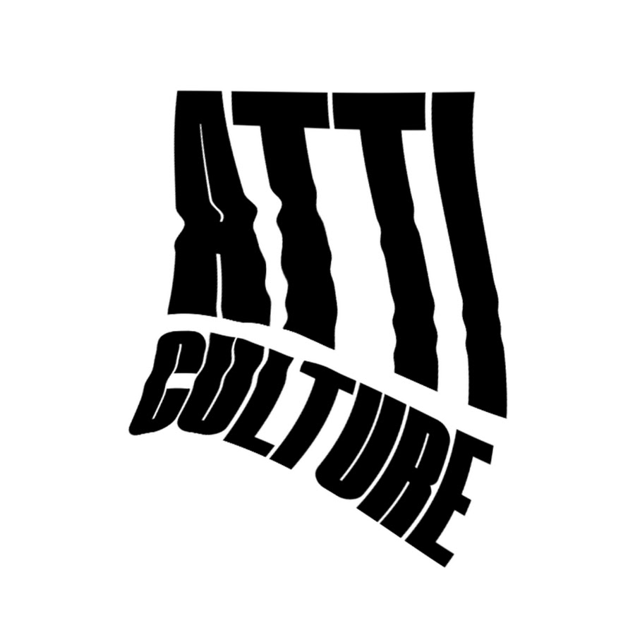
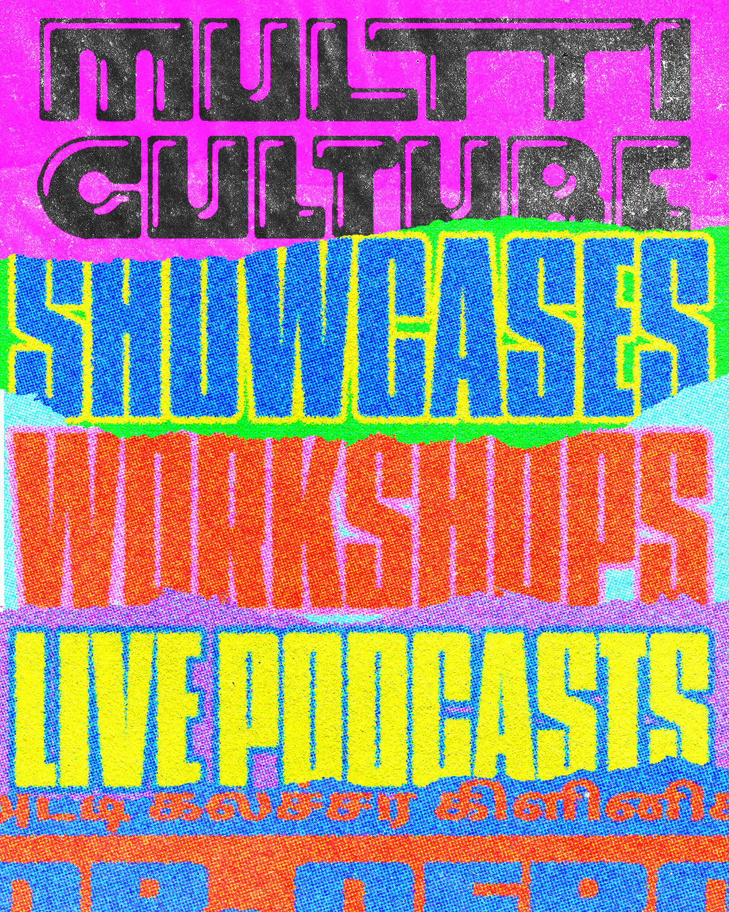
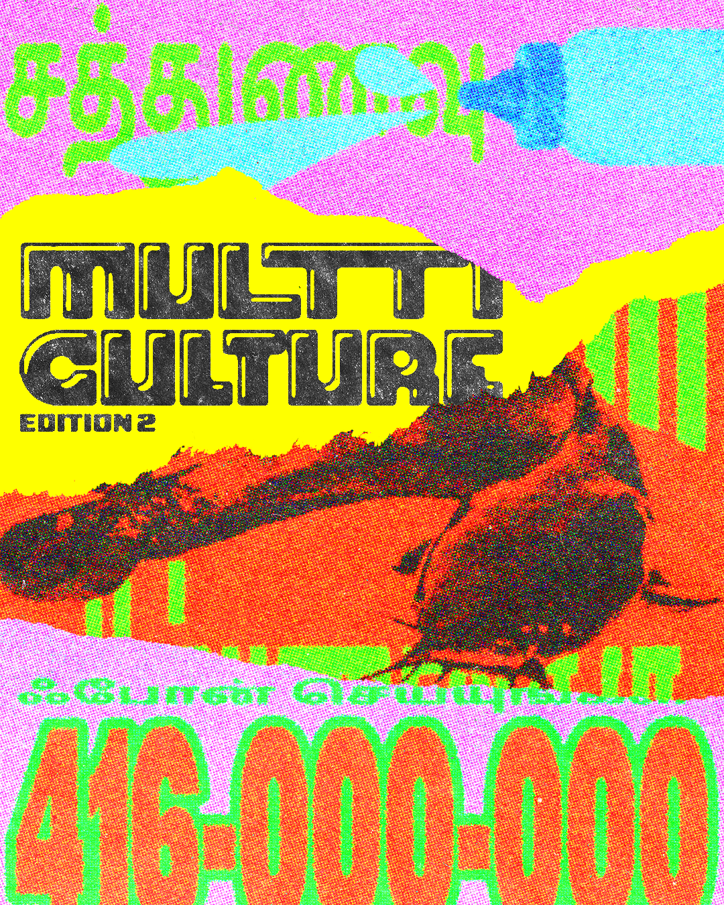
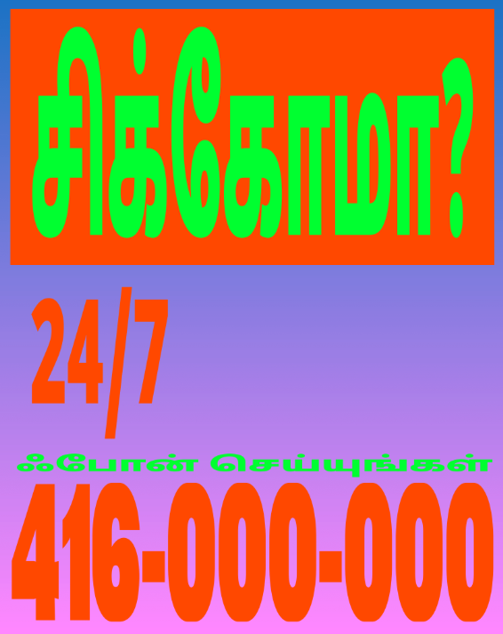
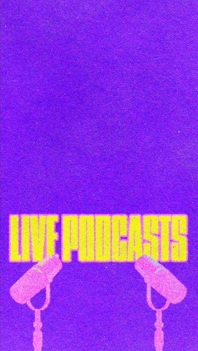

Live Podcast · 4–7 PM
Fryday Night Live
A live podcast taping in front of a real audience, hosted by Sameeha (potatoface).
Join the Conversation
Fryday Night Live brings the intimacy of your favorite podcast into a live, interactive setting. Be part of the room as we dive into unfiltered conversations about creativity, culture, and the hustle.
Expect surprise guests, audience Q&A segments, and the spontaneous energy that only happens when recording without a safety net.
Hosted by Sameeha
Known online as potatoface, Sameeha has built a loyal following through her candid interviews and unique perspective on the local arts scene.
